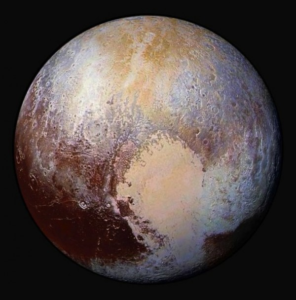
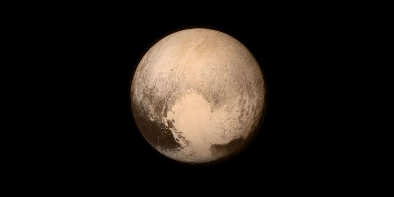

The Pluto
Solar System Sun Mercury Venus Earth Mars Jupiter Saturn Uranus Neptune Pluto

Definition

Discovered in 1930, Pluto is the second closest dwarf planet to the Sun and was at one
point classified as the ninth planet. Pluto is the largest dwarf planet but only the second
most massive, with Eris being the most massive.
Facts
-Pluto is named after the Greek god of the underworld.
-Pluto was reclassified from a planet to a dwarf planet in 2006.
-Pluto was discovered on February 18th, 1930 by the Lowell Observatory.
-Pluto has five known moons.
-Pluto is the largest dwarf planet.
-Pluto is one-third water.
-Pluto is smaller than a number of moons.
-Pluto has a eccentric an inclined orbit.
-Pluto has been visited by one spacecraft (The New Horizon sapacecraft).
-Pluto's location was predicted by Percivel Lowell in 1915. `
-Pluto sometimes has an atmosphere.
Profile
Diameter :2,372 km
Mass :1.31x10 22 kg
Orbit Distance :5,874,000,000 km (39.26 AU)
Orbit Period :248.0 years
Surface Temperature :-229 degrees Celsius
Moons :5 (charon)
Discovery Date :February 18th 1930
Discovered by :Clyde W. Tombaugh